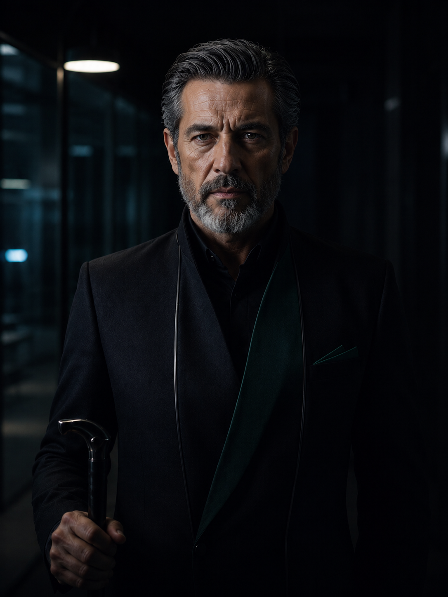
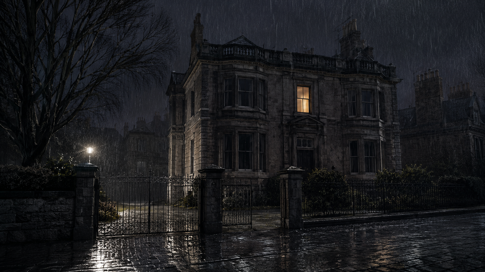
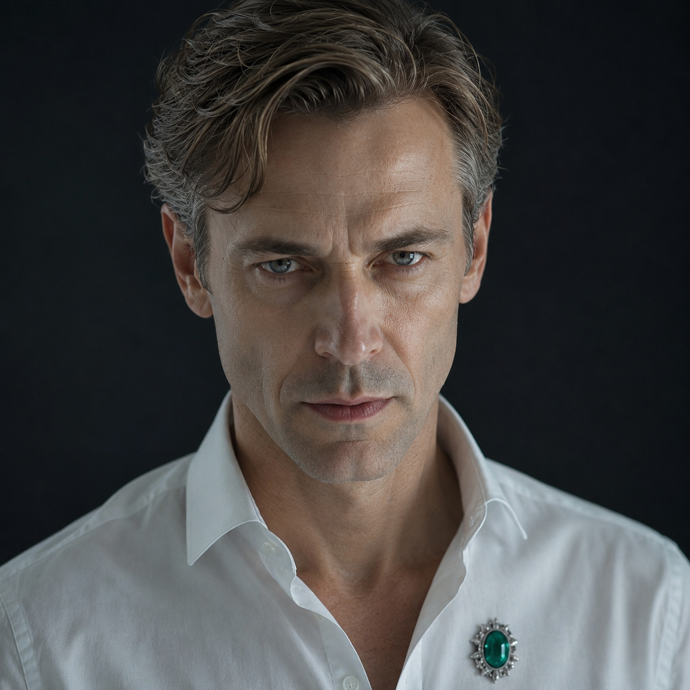
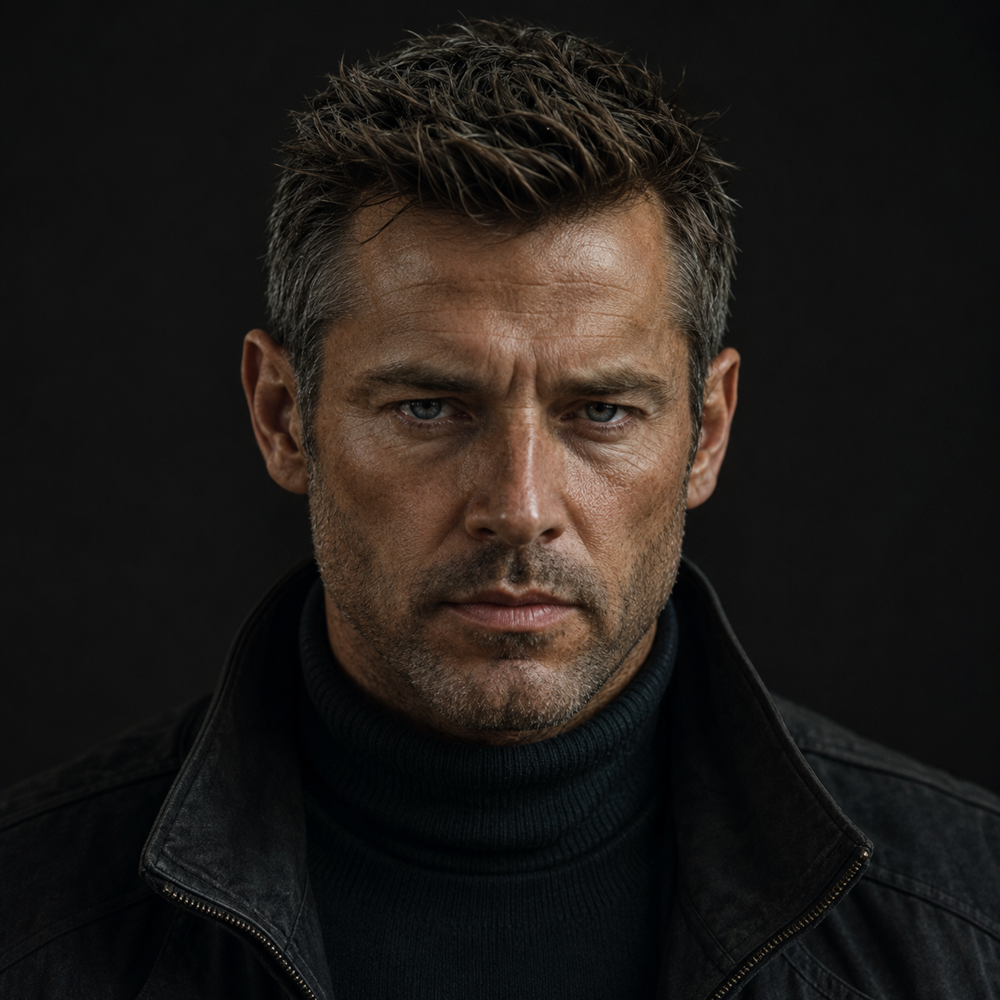
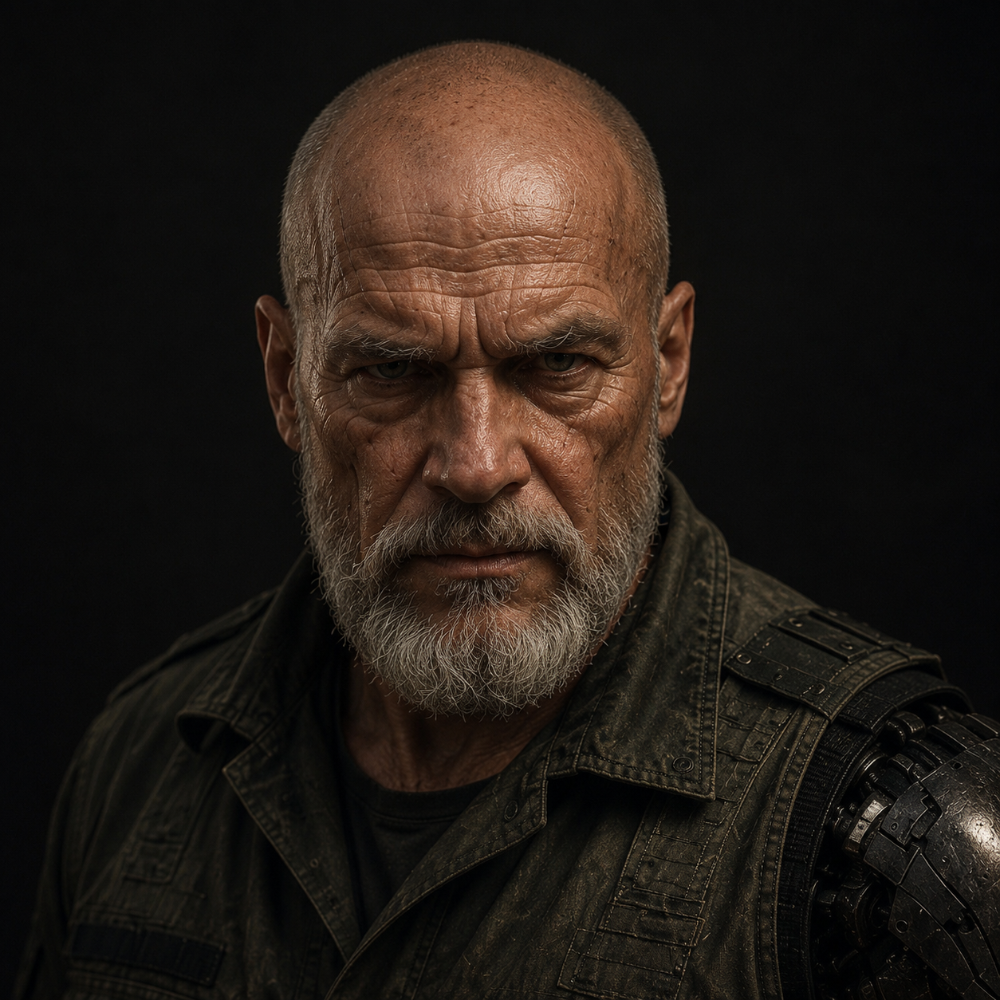
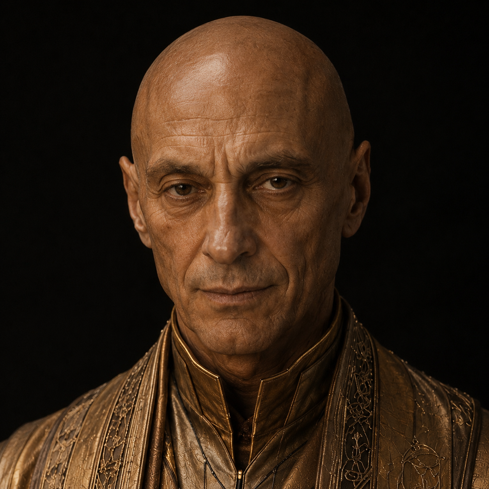
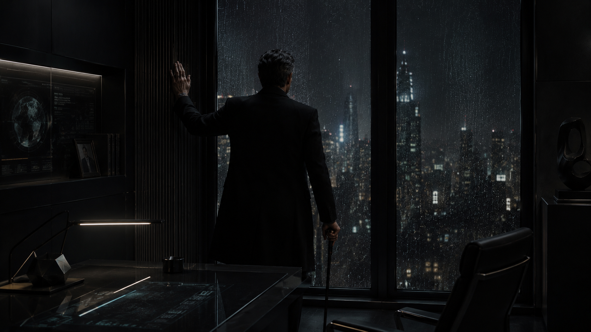

В 2031 году Дорн лично установил канал поставок с Джамахирией Нар. Годом позже к нему добавился «Призрачный флот» — подводные транспорты, невидимые для разведки Тенебриона и Единой Америки.
С 2046 года Аркадию и Австралийский Протекторат связывает «Пакт Выживания» — технологии в обмен на разведданные. Договор курирует постоянная дипломатическая миссия, но решения по-прежнему принимают лично Дорн и генерал Бер.
С Единой Америкой всё иначе — там не переговоры, а редкие инциденты. В 2061 году именно Дорн вёл переговоры с захваченным экипажем вторгшегося фрегата — сдержанно, без публичности, на своих условиях.





